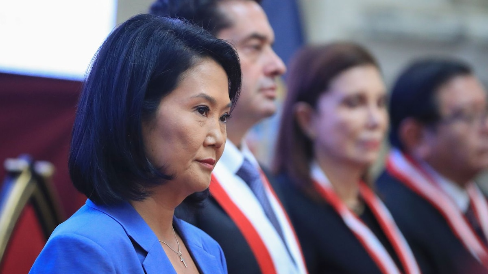
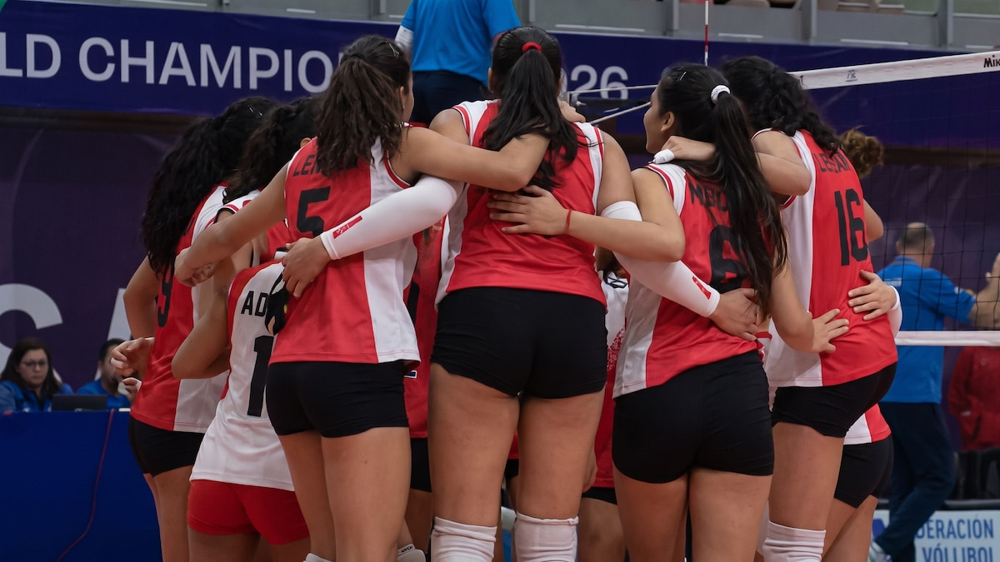

El Gobierno del Perú, a través de la Presidencia del Consejo de Ministros, oficializó este sábado 16 de agosto la designación de cuatro nuevos viceministros en el marco de una reestructuración integral del gabinete ministerial. Los nombramientos recaen en Elizabeth Zea (Viceministerio de Interculturalidad), Wiliam León (Viceministerio de Comercio Exterior), Carlos Lezameta (Viceministerio de Comercio Exterior) y Diana Bayona (Viceministerio de Comercio Exterior), todos ellos con perfiles técnicos y políticos que han generado reacciones divididas en la esfera pública.
La ceremonia de juramentación, encabezada por la presidenta Dina Boluarte y el premier Alberto Otárola, se realizó en el Salón Dorado de Palacio de Gobierno. Los nuevos funcionarios asumirán roles clave en los ministerios de Cultura (a través del Viceministerio de Interculturalidad) y de Comercio Exterior y Turismo (Mincetur), que concentra tres de las cuatro designaciones. La medida busca fortalecer la gestión estatal en áreas sensibles como la diversidad cultural, la promoción de exportaciones y la atracción de inversiones.
Elizabeth Zea: controversia y expectativas en Interculturalidad
El nombramiento de Elizabeth Zea como viceministra de Interculturalidad ha sido el más polémico de la jornada. Zea, abogada y antropóloga de formación, tiene una trayectoria vinculada a organizaciones no gubernamentales y ha sido asesora en proyectos de desarrollo indígena en la Amazonía. Sin embargo, su designación ha generado rechazo en sectores indígenas y académicos debido a declaraciones pasadas en las que cuestionaba ciertos enfoques del “consentimiento previo, libre e informado” para comunidades nativas.
Organizaciones como la Asociación Interétnica de Desarrollo de la Selva Peruana (AIDESEP) expresaron su preocupación mediante un pronunciamiento público, calificando el nombramiento como “un retroceso en la relación Estado-pueblos indígenas”. Por otro lado, funcionarios del Ejecutivo defienden su perfil técnico y destacan su participación en mesas de trabajo sobre titulación de comunidades nativas durante los últimos dos años. Zea, en sus primeras declaraciones, aseguró que su gestión será “inclusiva y participativa” y que priorizará la consulta previa como mecanismo de diálogo.
Mincetur: triada de viceministros para dinamizar el comercio exterior
El Ministerio de Comercio Exterior y Turismo (Mincetur) recibió a tres nuevos viceministros: Wiliam León, Carlos Lezameta y Diana Bayona. Los tres asumirán carteras estratégicas dentro del sector, aunque la distribución precisa de funciones será detallada en los próximos días. Fuentes de Mincetur indicaron que León liderará la promoción de exportaciones, Lezameta estará a cargo de negociaciones comerciales internacionales, y Bayona supervisará la facilitación del comercio y la competitividad.


Wiliam León, economista con maestría en comercio internacional, ha trabajado en el sector privado y en organismos multilaterales como la CAF. Su designación responde a la necesidad de diversificar la canasta exportadora peruana, que aún depende en gran medida de los minerales. Carlos Lezameta, por su parte, es un diplomático de carrera con experiencia en la OMC y en la Alianza del Pacífico, y se espera que lidere las negociaciones del TLC con India y la modernización del acuerdo con la Unión Europea. Finalmente, Diana Bayona, ingeniera industrial con posgrado en logística, será la encargada de impulsar la digitalización de los procesos aduaneros y la ventanilla única de comercio exterior.
“Estos nombramientos reflejan el compromiso del Gobierno con un comercio exterior más dinámico, inclusivo y sostenible. Confiamos en que los nuevos viceministros aportarán su experiencia para seguir posicionando al Perú como un socio comercial confiable en la región”, manifestó la ministra de Comercio Exterior y Turismo, Elizabeth Galdo.
Reestructuración gubernamental: cambios que abarcan Minam y otros sectores
La designación de estos cuatro viceministros se enmarca en una reestructuración más amplia que también afecta al Ministerio del Ambiente (Minam) y otras carteras, aunque los cambios en esas áreas se anunciarán en las próximas semanas. El premier Alberto Otárola explicó que la reorganización busca “optimizar la eficiencia del Estado y responder con agilidad a los desafíos económicos, sociales y ambientales del país”.
En el caso de Minam, se espera la salida de algunos viceministros y la incorporación de perfiles con orientación a la economía circular y la gestión de residuos sólidos, temas que han cobrado urgencia debido a los conflictos socioambientales en regiones como Áncash y Madre de Dios. Asimismo, fuentes de Palacio señalaron que los cambios en los ministerios de Educación y Salud se anunciarán antes de fin de mes, como parte de una renovación integral del gabinete.
Reacciones de los gremios empresariales y políticos
La Confederación Nacional de Instituciones Empresariales Privadas (CONFIEP) saludó los nombramientos en Mincetur y destacó la “experiencia técnica” de los nuevos viceministros. Sin embargo, desde la oposición, el congresista Waldemar Cerrón (Perú Libre) calificó la medida como “un parche” y exigió mayor transparencia en los criterios de selección. Por su parte, la congresista Susel Paredes (Partido Morado) pidió que se aclare el papel de Elizabeth Zea en la formulación de políticas indígenas, solicitando su presencia en la Comisión de Pueblos Andinos, Amazónicos y Afroperuanos del Congreso.
- Elizabeth Zea: Viceministra de Interculturalidad – perfil vinculado a ONG y proyectos amazónicos.
- Wiliam León: Viceministro de Comercio Exterior – especialista en promoción de exportaciones.
- Carlos Lezameta: Viceministro de Comercio Exterior – experto en negociaciones comerciales.
- Diana Bayona: Viceministra de Comercio Exterior – especialista en facilitación y logística.
En redes sociales, la etiqueta #NuevosViceministros fue tendencia durante la mañana, con opiniones encontradas. Mientras algunos usuarios celebraban la llegada de “sangre nueva” al sector público, otros criticaban la falta de representación indígena en el viceministerio de Interculturalidad. La Defensoría del Pueblo emitió un comunicado en el que insta al Ejecutivo a garantizar que las políticas interculturales sean consultadas con las organizaciones representativas y que se respeten los estándares internacionales del Convenio 169 de la OIT.
Próximos pasos y retos inmediatos
Los nuevos viceministros deberán presentar sus planes de trabajo en un plazo de 15 días hábiles, según lo dispuesto por la Secretaría de Gestión Pública. Entre los retos inmediatos de Elizabeth Zea destaca la implementación del Plan Nacional de Desarrollo de Pueblos Indígenas y la resolución de conflictos territoriales en la Amazonía. En tanto, el equipo de Mincetur deberá enfocarse en la recuperación de las exportaciones no tradicionales, que aún no alcanzan los niveles prepandemia, y en la atracción de inversiones en el sector turismo, duramente golpeado por los fenómenos climáticos y la inestabilidad política.
La designación de estos funcionarios se produce en un contexto de baja popularidad del Ejecutivo y de creciente presión social por mejores condiciones de vida en las regiones. Los analistas coinciden en que el éxito de estos viceministros dependerá de su capacidad para articular con los gobiernos regionales y con la sociedad civil, así como de su habilidad para navegar en un escenario político fragmentado. Por ahora, las miradas están puestas en las primeras acciones que tomarán los nuevos integrantes del gabinete, que deberán demostrar que su nombramiento no fue solo un cambio de nombres, sino un verdadero impulso a la gestión estatal.